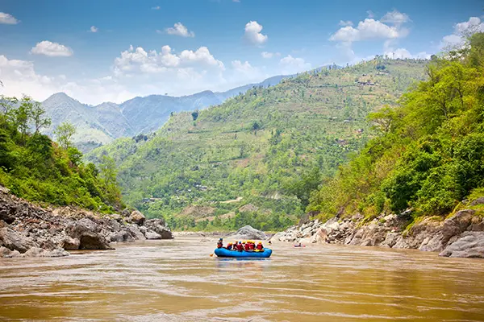
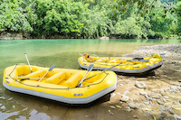
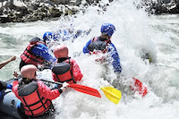
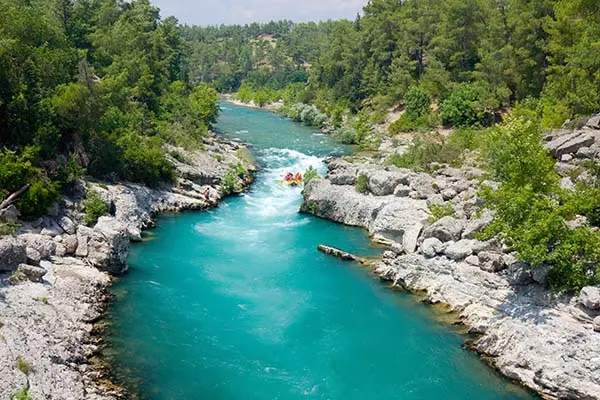
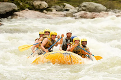

"Incredible experience from start to finish! The guides were super knowledgeable, made us feel completely safe on the rapids, and brought genuine capixaba warmth to the whole trip. Floating through the Atlantic Forest canyons after tackling the white water was unforgettable—easily the highlight of our trip to Espírito Santo." — Lucas M.

Espírito Santo Rafting
History
Espírito Santo Rafting began when a tight-knit crew of local paddlers set out to share the wild white water cascading from the Caparaó mountains toward the coast. Looking beyond the state's famous beaches, our founders launched expeditions through Espírito Santo's rugged Atlantic Forest canyons with top-tier gear and a passion for the river.

Today, our certified guides pair international safety standards with genuine capixaba hospitality on every trip down the water. Whether you are a first-time paddler or a seasoned thrill-seeker, we welcome you to experience exciting rapids, lush scenery, and unforgettable river adventures.
Adventure Awaits You!




